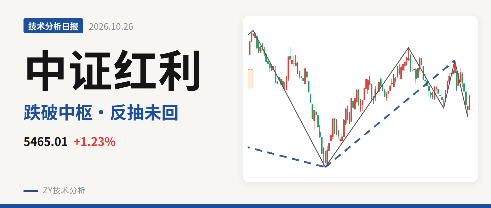
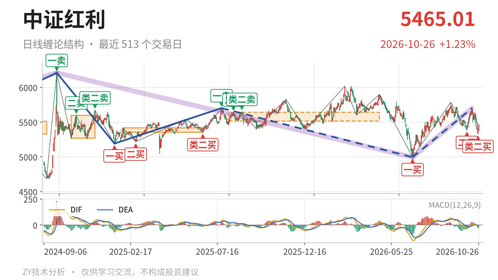
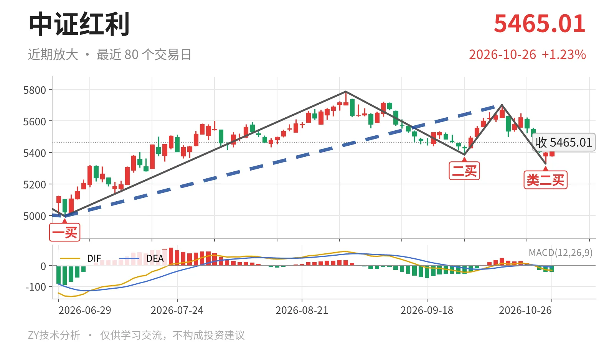

中证红利｜反抽未回5518点 中枢下沿成三卖观察位

最近日线中枢 5518.46—5639.99点，收盘位于中枢之下
一句话：反抽未回5518点下沿，类二买后未成笔，零轴下结构偏弱。
🧭 走势结构：反弹未改更大级别调整
当前日线级别仍在6月30日以来的上涨线段里，但更大级别2024年10月8日以来的下跌走势没有结束。6月30日至10月14日的上涨线段从4995.49点升至5701.06点，涨14.1%，还在延续；其高点未越过2025年7月23日一卖5702.03点。2025年7月23日至2026年6月30日下跌线段也还未走完，因而这次反弹只能看作下跌中的修复，不是转折。

📊 中枢与位置：跌破最近中枢，反抽未回
最新收盘5465.01点处于最近日线笔中枢下方。该中枢为2025年8月4日至2026年4月30日形成，区间5518.46—5639.99点，中轴5579.23点。现价低于下沿约53点，幅度约1.0%。此前中枢从5353.68—5416.65点上移到5518.46—5639.99点，但价格回到下沿之下，中枢上移未被站稳。
🔄 买卖点：类二买后未成笔，级别仍小
10月23日类二买5328.30点形成后，反弹尚未成笔，买点只对应日线笔级别。6月30日一买4995.49点、9月29日二买5386.04点完成过反弹，但10月14日高点5701.06点未过5702.03点，更大级别下跌段没有扭转。10月23日以来仅1根K线，最高5470.34点，未回5518点上方，因此这些买点不升级。

⚡ 背驰：下跌新低但力度收缩
10月14日至10月23日下跌笔对比9月1日至9月29日下跌笔，属于“新低不新弱”。10月23日低点5328.30点低于5386.04点，但绿柱面积由561缩至53，DIF低点由-32.7抬升至-20.4。最新交易日DIF为-23.0，DEA为-7.8，柱为-30.4，DIF仍在零轴下，反弹还没改变零轴下格局。
🎯 关键位置观察：反抽能否回到5518点上方
短期结构偏弱，弱在价格跌破最近中枢下沿、反弹未成笔、DIF仍在零轴下方。接下来看反抽能否回到5518点上方：若回不到5518点上方，结构上构成对2025年8月4日至2026年4月30日中枢的三卖，10月14日以来的回落仍可能延续。若重新站上5518点，则回落更可能只是中枢扩展，6月30日以来上涨线段仍按震荡处理。下方5328点若失守，类二买被破坏，回落笔延续。
⚠️ 本文为基于公开行情数据的缠论技术结构记录，由程序自动计算并生成，仅供学习交流，不构成任何投资建议。市场有风险，投资需谨慎。